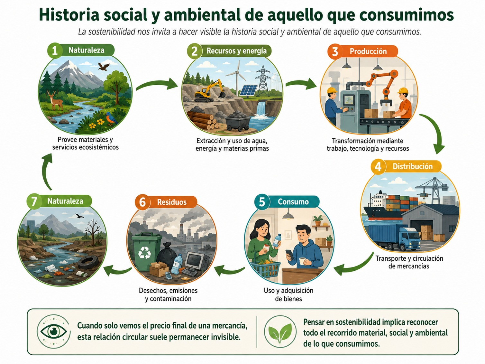
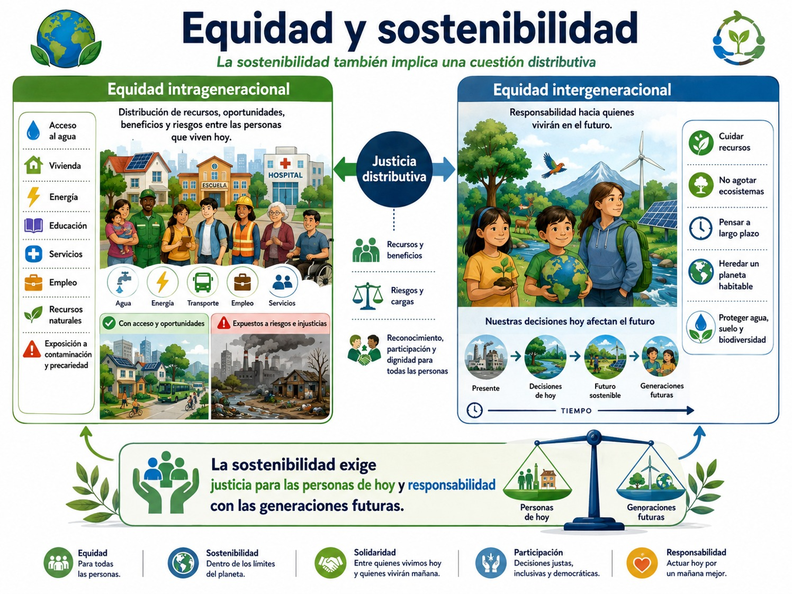
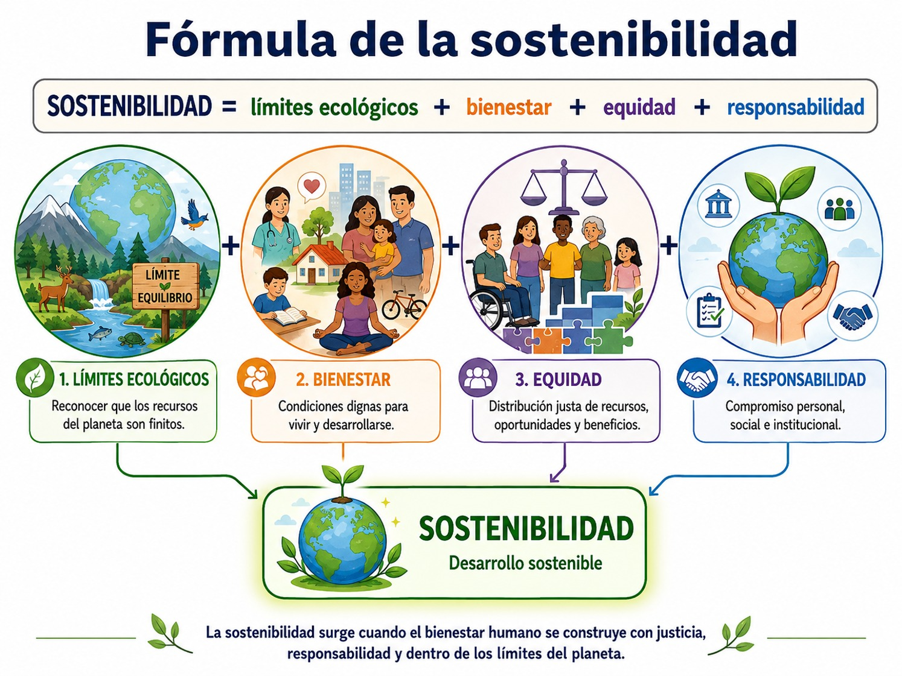
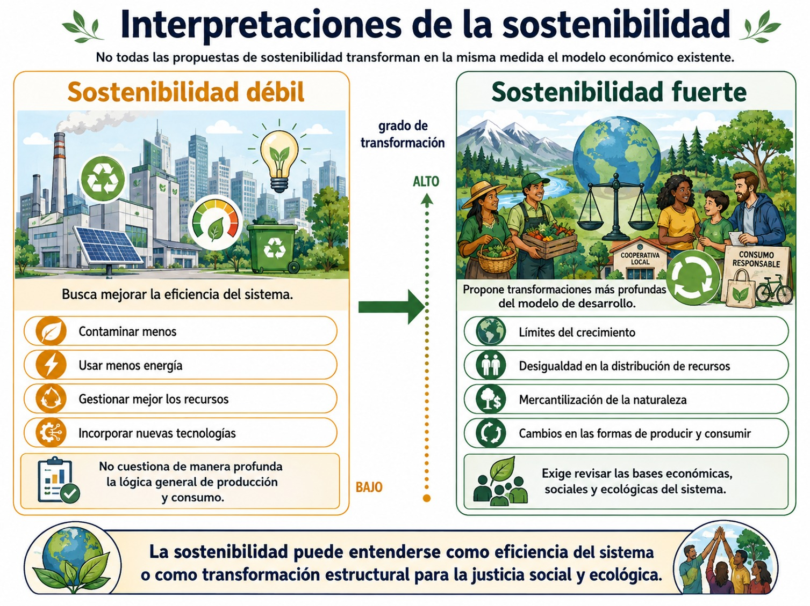
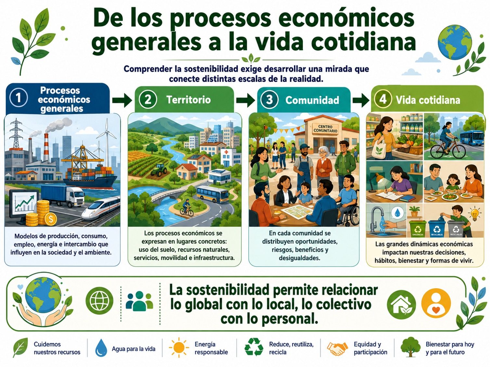

Durante buena parte de la historia contemporánea, la noción de desarrollo estuvo asociada principalmente con el crecimiento económico, la industrialización, el incremento de la producción, la modernización tecnológica y la expansión de los mercados. Desde esta perspectiva, una sociedad parecía desarrollarse en la medida en que aumentaba su capacidad para producir bienes y servicios y generaba mayores niveles de ingreso.
Sin embargo, a partir de la segunda mitad del siglo XX comenzó a hacerse evidente que el crecimiento económico también producía problemas: agotamiento de recursos naturales, contaminación, deterioro de los ecosistemas, desigualdades sociales y territoriales, pobreza y formas desiguales de apropiación de los beneficios del desarrollo. López Pardo (2015), señala que precisamente la progresiva toma de conciencia sobre los límites ecológicos y las dificultades para mantener indefinidamente los ritmos de crecimiento de las economías más desarrolladas constituye uno de los antecedentes del debate contemporáneo sobre la sostenibilidad.
De esta manera, la pregunta por el desarrollo comienza a modificarse. Ya no basta con preguntar cuánto crece una economía, sino que necesitamos preguntarnos cómo crece, mediante qué recursos, quiénes reciben sus beneficios, quiénes soportan sus costos y durante cuánto tiempo puede mantenerse ese modelo de crecimiento.
Este desplazamiento conceptual es fundamental. Nos permite distinguir entre crecimiento económico y desarrollo. Una sociedad puede aumentar su producción y, sin embargo, continuar reproduciendo pobreza, desigualdades, exclusión o deterioro ambiental. Por ello, el desarrollo no puede reducirse a indicadores económicos: debe vincularse también con el bienestar social, la calidad de vida, la distribución de los recursos, la protección ambiental y la capacidad de las generaciones futuras para satisfacer sus necesidades.
El Informe Brundtland y la formulación contemporánea del desarrollo sostenible
Un momento decisivo de este debate ocurrió en 1987 con la publicación del informe Nuestro futuro común, conocido como Informe Brundtland, elaborado por la Comisión Mundial sobre Medio Ambiente y Desarrollo. Allí se formuló una de las definiciones más influyentes del desarrollo sostenible: aquel desarrollo capaz de satisfacer las necesidades de las generaciones actuales sin comprometer la capacidad de las generaciones futuras para satisfacer las propias.
Esta definición introduce dos ideas que transforman nuestra manera de comprender el desarrollo. La primera es la noción de necesidad. La economía no debería funcionar únicamente para aumentar la producción o acumular riqueza, sino para contribuir a satisfacer necesidades humanas y garantizar condiciones adecuadas de vida. La segunda es la noción de responsabilidad intergeneracional. Las decisiones económicas, sociales y ambientales que tomamos hoy afectan las posibilidades de vida de quienes todavía no han nacido. El uso del agua, la explotación de minerales, la pérdida de biodiversidad, la contaminación de los suelos o la emisión de contaminantes no son acontecimientos exclusivamente presentes: sus consecuencias pueden extenderse durante décadas o incluso generaciones.
Por ello, la sostenibilidad introduce una dimensión temporal en nuestra responsabilidad: lo que hacemos hoy determina parte de las posibilidades de mañana. Pero López Pardo (2015), advierte que el concepto no está exento de dificultades. Existe una gran diversidad de interpretaciones y una verdadera disputa acerca de qué significa exactamente sostenibilidad, qué debemos sostener y cuáles son las transformaciones necesarias para conseguirla. La amplitud del concepto ha permitido construir consensos, pero también ha provocado ambigüedades.
Conocer y apropiarse de los conceptos del desarrollo sostenible desde una perspectiva crítica.
Domínguez Valerio (2019), propone comprender la sostenibilidad mediante la articulación de tres grandes dimensiones: económica, social y ambiental. Además, recupera planteamientos que incorporan una cuarta dimensión, la político-institucional.
La dimensión económica se refiere a la capacidad de producir bienes y servicios de manera duradera, generar ingresos, empleo e innovación y evitar desequilibrios que hagan inviable la propia actividad económica. Sin embargo, no se limita a producir riqueza: también resulta importante analizar cómo se distribuyen sus beneficios.
La dimensión social introduce cuestiones relacionadas con igualdad, bienestar, acceso a servicios, reducción de la pobreza, igualdad de género y condiciones dignas de vida. Esto significa que una actividad no puede calificarse como sostenible únicamente porque sea económicamente rentable o ambientalmente eficiente si al mismo tiempo reproduce exclusiones o desigualdades.
La dimensión ambiental exige reconocer que toda actividad humana depende de una base material y ecológica. Las economías necesitan agua, energía, territorio, minerales, suelo, biodiversidad y múltiples servicios proporcionados por los ecosistemas. La sostenibilidad ambiental implica evitar la sobreexplotación de los recursos y conservar las condiciones ecológicas necesarias para la vida.
Finalmente, la dimensión político-institucional incorpora las reglas, instituciones, decisiones colectivas, legislaciones y mecanismos mediante los cuales se regulan las relaciones entre economía, sociedad y medio ambiente. Esta dimensión resulta especialmente importante porque la sostenibilidad no depende exclusivamente de decisiones individuales: exige instituciones capaces de regular actividades, resolver conflictos, distribuir responsabilidades y establecer mecanismos de participación y rendición de cuentas.
Estas cuatro dimensiones pueden entenderse como un sistema interdependiente, observa el siguiente diagrama:

Modificar una de ellas produce efectos sobre las demás. Por eso, los problemas de sostenibilidad difícilmente pueden resolverse desde una sola disciplina o mediante una acción aislada.
Ahora bien, desde una lectura crítica, conviene preguntarnos ¿qué significa realmente “sostener”? Aquí aparece una de las aportaciones más importantes del texto de López (2015), que es que la aparente claridad del término desarrollo sostenible esconde una pregunta fundamental:
¿Qué es exactamente aquello que queremos sostener?
La pregunta no es menor pues podemos intentar sostener el crecimiento económico, determinados niveles de consumo, la acumulación de capital, la disponibilidad de recursos naturales, la calidad de vida, los ecosistemas o la satisfacción de necesidades humanas, así cada respuesta conduce hacia una concepción diferente de sostenibilidad.
López (2015), recupera precisamente la crítica de O'Connor, para quien hablar de sostenibilidad puede significar cosas muy distintas: mantener los procesos de acumulación económica, garantizar recursos para quienes los necesitan, perpetuar determinadas relaciones económicas y laborales o preservar las condiciones ecológicas. Por ello, no te presentamos el desarrollo sostenible como un concepto cerrado ni neutral pues en realidad se trata de un concepto en disputa.
Preguntar por la sostenibilidad significa también preguntar:
¿qué queremos conservar, qué necesitamos transformar y a quién beneficia aquello que pretendemos sostener?
Esta última pregunta adquiere especial importancia cuando situamos la sostenibilidad dentro del capitalismo contemporáneo.
Desarrollo sostenible y capitalismo contemporáneo
El capitalismo contemporáneo se caracteriza por una economía organizada alrededor de la producción de mercancías, los mercados, la inversión, la competencia, la propiedad privada y los procesos de acumulación. Ha generado enormes transformaciones tecnológicas y productivas y una capacidad históricamente extraordinaria para producir bienes y servicios, pero esas capacidades coexisten con profundas desigualdades y con una presión creciente sobre los sistemas naturales.
Aquí encontramos una de las contradicciones centrales que López (2015), identifica en el debate sobre sostenibilidad: la difícil conciliación entre crecimiento económico permanente y protección ambiental. El problema puede formularse mediante una pregunta sencilla:
¿Puede una economía crecer indefinidamente en un planeta cuyos recursos y capacidades ecológicas son limitados?
La pregunta te invita a distinguir entre diferentes tipos de crecimiento, por ejemplo, hay que diferenciar el crecimiento de la economía biofísica, el crecimiento de la producción o ingreso y el crecimiento del bienestar humano. Estos procesos pueden relacionarse, pero no son equivalentes. El crecimiento de la economía biofísica se refiere al aumento de la escala material y energética de la actividad económica. Es decir, no mide principalmente cuánto dinero produce una economía, sino cuántos recursos físicos extrae, transforma, transporta y consume, y cuántos residuos y emisiones devuelve al medio ambiente. En otras palabras, el crecimiento de la economía biofísica es el aumento de la cantidad de naturaleza que una sociedad moviliza para mantener su actividad económica: materiales, energía, agua y territorio que entran al sistema productivo, junto con los residuos y emisiones que salen de él. Por su parte, el crecimiento de la producción o del ingreso se refiere al aumento del valor económico de los bienes y servicios que produce una economía durante un periodo determinado. Y el crecimiento del bienestar humano se refiere a la mejora de las condiciones reales de vida de las personas.
Esto significa que más producción no conduce automáticamente a más bienestar, por ejemplo, una actividad económica puede incrementar el ingreso y, al mismo tiempo, contaminar un río; generar empleos y simultáneamente producir condiciones laborales precarias; aumentar las exportaciones mientras agota los recursos hídricos de una región; o incrementar el consumo mientras aumenta también la generación de residuos.
De allí que una lectura crítica de la sostenibilidad necesite analizar tanto los beneficios como las externalidades y costos de los procesos económicos.
De la naturaleza como recurso a la naturaleza como condición de posibilidad
Una concepción estrictamente económica puede considerar a la naturaleza principalmente como un conjunto de recursos disponibles para la producción. La perspectiva de la sostenibilidad modifica esta visión pues la economía no existe separada de la naturaleza. Toda producción necesita materiales, energía, agua y territorio, y todo proceso económico genera algún tipo de residuo o transformación material. López (2015), recuerda que las economías humanas dependen del capital natural para su funcionamiento, al tiempo que los procesos de industrialización afectan los ciclos ecológicos de los cuales depende la propia sociedad.
Este diagrama nos muestra la historia social y ambiental de aquello que consumimos:

Este diagrama nos permite ver que detrás de un teléfono, una computadora, una prenda de vestir, un automóvil o un alimento existen materiales extraídos de algún territorio, agua y energía empleadas en su producción, trabajo humano, transporte, infraestructura y, finalmente, residuos. La sostenibilidad nos invita, por tanto, a hacer visible la historia social y ambiental de aquello que consumimos.
Las necesidades: entre una vida digna y la sociedad de consumo
Otro problema señalado por López (2015), se refiere precisamente al concepto de necesidad. La definición del Informe Brundtland habla de satisfacer necesidades presentes y futuras, pero no resulta sencillo determinar cuáles son esas necesidades. ¿Hablamos únicamente de necesidades básicas? ¿De aquellas necesarias para alcanzar una vida digna? ¿O también de las necesidades que las propias sociedades de consumo producen continuamente?
Esta última pregunta resulta particularmente importante en el capitalismo contemporáneo, donde una parte significativa de la actividad económica depende no solo de satisfacer necesidades preexistentes, sino también de estimular nuevos deseos y formas de consumo.
Desde esta perspectiva, la sostenibilidad requiere distinguir entre satisfacer necesidades humanas y expandir indefinidamente el consumo ya que no son necesariamente lo mismo. Por ejemplo, una sociedad podría mejorar sustancialmente la calidad de vida de su población mediante mejores servicios de salud, educación, vivienda, transporte, espacios públicos y condiciones laborales sin que ello implicara necesariamente un crecimiento ilimitado del consumo material.
La pregunta relevante deja entonces de ser únicamente “¿cuánto podemos consumir?” y se transforma en “¿qué necesitamos para vivir dignamente?”
Dignidad humana y derechos como criterio del desarrollo
Dávila et al. (2023), recuerdan que los derechos humanos protegen dimensiones fundamentales de la existencia y comprenden, entre otras, condiciones vinculadas con alimentación, educación, trabajo, salud, libertad y seguridad social. Asimismo, destacan la relación entre dignidad y acceso efectivo a derechos económicos y sociales.
En ese sentido podemos afirmar que el desarrollo solo puede considerarse socialmente valioso cuando contribuye a crear condiciones que permitan a las personas vivir con dignidad.
Esta perspectiva modifica nuestra manera de evaluar los resultados económicos, en otras palabras, un proyecto que produce importantes ganancias pero deteriora la salud de una comunidad plantea un problema de sostenibilidad, una actividad que genera riqueza pero mantiene empleos en condiciones indignas también lo plantea o un proceso productivo que utiliza intensivamente los recursos de una comunidad sin distribuir equitativamente sus beneficios tampoco puede analizarse únicamente mediante sus resultados económicos. En ese sentido, la dignidad humana funciona entonces como un criterio ético para evaluar el desarrollo.
Es en este punto que debemos preguntar: ¿desarrollo para quién?
- La sostenibilidad incorpora además una cuestión distributiva. López (2015), distingue dos dimensiones fundamentales de la equidad: intrageneracional e intergeneracional:
- • La equidad intrageneracional se refiere a la distribución de los recursos, oportunidades, beneficios y riesgos entre las personas que viven actualmente. Nos obliga a preguntar quiénes tienen acceso al agua, vivienda, energía, educación, servicios, empleo y recursos naturales, así como quiénes se encuentran más expuestos a contaminación, riesgos ambientales o precariedad.
- • La equidad intergeneracional, por otra parte, introduce la responsabilidad hacia quienes vivirán en el futuro. No sería justo que las generaciones actuales maximizaran su bienestar agotando recursos o destruyendo ecosistemas de los cuales dependerán las generaciones posteriores.
Ambas dimensiones permiten comprender que la sostenibilidad es también una cuestión de justicia, observa el siguiente diagrama:

En síntesis, no basta con proteger determinados recursos naturales si el costo de hacerlo recae exclusivamente sobre comunidades empobrecidas. Del mismo modo, tampoco resulta sostenible mejorar las condiciones actuales a costa de deteriorar drásticamente las posibilidades de vida futuras.
Por ello podemos presentar la siguiente formula:

Sostenibilidad débil y sostenibilidad fuerte: dos maneras de comprender el cambio
López (2015), permite identificar una tensión especialmente útil para tus análisis en esta universidad: no todas las propuestas de sostenibilidad pretenden transformar en la misma medida el modelo económico existente.
En una interpretación débil, la sostenibilidad puede consistir fundamentalmente en mejorar la eficiencia del sistema: contaminar menos, utilizar menos energía, gestionar mejor los recursos o incorporar nuevas tecnologías sin cuestionar sustancialmente la lógica general de producción y consumo.
En una interpretación fuerte, en cambio, la sostenibilidad requiere preguntarse por los límites del crecimiento, por las desigualdades en la distribución de los recursos, por la mercantilización de la naturaleza y por las transformaciones necesarias en las formas de producir y consumir.
El siguiente diagrama te ayudará a distinguir estos conceptos:

En síntesis, algunas críticas al desarrollo sostenible sostienen que su ambigüedad puede permitir que el término funcione simplemente como una etiqueta que legitime la continuidad de prácticas económicas insostenibles, incluso diversos planteamientos críticos llegan a cuestionar si determinadas formulaciones de “capitalismo sostenible” solucionan realmente las contradicciones entre crecimiento, explotación de recursos y deterioro ambiental. Pese a ello, hay que reconocer también el argumento contrario: precisamente por su amplitud, el concepto de sostenibilidad ha permitido colocar en la agenda pública mundial la relación entre medio ambiente, bienestar y justicia social y crear un espacio común de discusión entre actores con intereses diferentes.
Por tanto, una lectura crítica no significa rechazar la sostenibilidad, por el contrario, significa evitar convertirla en un eslogan y preguntarnos qué transformaciones reales propone.
De lo global a lo local: territorializar la sostenibilidad
Domínguez (2019), señala que el desarrollo sostenible adquiere sentido en una región cuando se articula con su capacidad económica, la igualdad social, la conservación de los recursos naturales, los valores y las características ambientales del lugar. Esto resulta fundamental porque la sostenibilidad siempre ocurre en algún territorio en específico.
Es por ello que conceptos como deterioro ambiental, desigualdad o escasez pueden parecer muy abstractos hasta que los observamos en nuestra colonia, municipio, comunidad o ciudad.
También, el problema del agua puede manifestarse de manera diferenciada en los territorios como cortes frecuentes, contaminación, sobreexplotación de acuíferos o desigualdad en el acceso, o el problema de la movilidad puede aparecer como largas horas de traslado, contaminación atmosférica o falta de transporte público o la desigualdad puede expresarse mediante diferencias en vivienda, educación, infraestructura, seguridad, espacios verdes o acceso a servicios. Por ello, comprender la sostenibilidad exige desarrollar una mirada que conecte los procesos económicos generales, el territorio, la comunidad y la vida cotidiana, observa el siguiente diagrama:

Este diagrama te muestra que el territorio deja de ser únicamente el lugar donde ocurren los problemas y se convierte en el espacio donde pueden conocerse sus relaciones y construirse alternativas.
Del contexto local al contexto personal: reconocer nuestra interdependencia
El desarrollo sostenible también atraviesa nuestra vida cotidiana, si ponemos atención, nos daremos cuenta de que nuestros hábitos de alimentación, movilidad, energía, agua, ropa, tecnología y consumo generan impactos que se conectan con cadenas económicas y territoriales mucho más amplias.
Sin embargo, una lectura crítica debe evitar un error frecuente, que es individualizar problemas que tienen causas estructurales pues, lo cierto, es que no todas las personas tienen la misma capacidad de elegir.
Una persona podría querer utilizar transporte menos contaminante y vivir en una zona sin transporte público adecuado o podría querer consumir productos con menor impacto ambiental pero no tener capacidad económica para adquirirlos o podría reducir cuidadosamente su consumo doméstico de agua mientras grandes actividades productivas utilizan volúmenes incomparablemente mayores.
Esto nos permite introducir una diferencia fundamental entre responsabilidad personal y responsabilidad estructural.
Las decisiones individuales importan, pero están condicionadas por infraestructuras, mercados, políticas públicas, ingresos, territorios y relaciones sociales. La responsabilidad por la sostenibilidad, por tanto, debe analizarse de manera diferenciada en un ciclo formado de manera interdependiente entre la persona, la comunidad, las instituciones, la economía y la naturaleza. Es decir, siempre hay que tomar en cuenta que no somos personas aisladas que simplemente “eligen consumir” sino que formamos parte de sistemas sociales, económicos y ecológicos interdependientes. Observa el siguiente diagrama:

Una lectura crítica para la Responsabilidad Social Universitaria
Ahora bien, si entendemos la RSU como la capacidad de la universidad para reconocer y hacerse responsable de los impactos que genera mediante su formación, investigación, gestión institucional y vinculación social, entonces la sostenibilidad no puede reducirse a colocar contenedores para reciclar residuos o realizar campañas ambientales.
La primera pregunta debería ser más profunda:
¿Qué tipo de desarrollo contribuye a producir nuestra universidad mediante los conocimientos que enseña, las investigaciones que realiza, los profesionistas que forma y las relaciones que establece con su territorio?
En la formación, implica preparar profesionistas capaces de reconocer que sus decisiones generan efectos económicos, sociales y ambientales.
En la investigación, significa producir conocimiento socialmente pertinente para comprender problemas reales y construir alternativas.
En la vinculación, implica relacionarse con las comunidades no como objetos pasivos de intervención, sino como actores con conocimientos, experiencias y capacidades propias.
Y en la gestión institucional, exige revisar también el consumo de recursos, las condiciones laborales, la igualdad, la inclusión, la movilidad, las compras, la infraestructura y los residuos producidos por la propia institución.
De esta manera, la universidad no puede limitarse a enseñar sostenibilidad, sino también necesita examinar críticamente sus propias prácticas.
Podríamos distinguir tres distintas escalas para pensar nuestra responsabilidad y organizar el análisis del desarrollo sostenible: la escala personal, la local territorial, la universitaria y de RSU, además es importante decir que las tres escalas no compiten entre sí, por el contrario, se complementan.
En síntesis, podemos afirmar que una auténtica cultura de sostenibilidad requiere personas responsables, comunidades organizadas e instituciones capaces de transformar las condiciones estructurales que producen insostenibilidad como lo muestra el siguiente diagrama:

Entonces, ¿qué significa desarrollo sostenible?
A partir de los autores que revisamos podemos construir para esta UCA una definición de trabajo:
El desarrollo sostenible es un proceso orientado a garantizar condiciones de vida dignas y equitativas para las generaciones presentes y futuras mediante una relación responsable entre economía, sociedad, instituciones y naturaleza, reconociendo los límites ecológicos, la distribución desigual de los recursos y la necesidad de transformar aquellas prácticas y estructuras que producen deterioro ambiental o exclusión social.
La clave está en comprender que la sostenibilidad no consiste simplemente en hacer durar algo. Lo importante es preguntarnos qué merece ser sostenido y qué necesita ser transformado.
Una economía que destruye las bases ecológicas de la vida no puede sostenerse indefinidamente pero tampoco debería aspirarse a sostener una sociedad profundamente desigual únicamente porque sea económicamente eficiente.
De allí que la mejor pregunta para una perspectiva crítica de la RSU sea:
¿Cómo construir formas de desarrollo capaces de sostener la vida, la dignidad, la justicia social y las condiciones ecológicas del planeta, en lugar de limitarse a sostener indefinidamente el crecimiento económico?
Preguntas para problematizar con el resto de estudiantes:

- Dávila, Carlos, Dávila, Marcos y Dávila, Roberto (2023). Derechos humanos y los objetivos del desarrollo sostenible, FIPCAEC (Edición 37) Vol. 8, No 1 enero-marzo, 539-549
- Domínguez, Valerio (2019). Introducción al desarrollo sostenible. (4) N. 4. México: Revista Utesiana de la Facultad Ciencias y Humanidades, 34-40.
- López, Iván (2015). Sobre el desarrollo sostenible y la sostenibilidad: conceptualización y crítica, en Barataria Revista Castellano-Manchega de Ciencias Sociales, N. 20, 111-128.
Para profundizar sobre este tema puedes ver los siguientes videos: